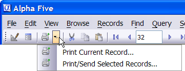

Print Current Record
You can print records from within form or browse View. The toolbar includes a drop-down button, which you can set to either the Print Current Record button, or the Print/Send Selected Records button.

The Print Current Record button displays a dialog that lets you Print, Preview, Email, or Save to File the current record using any of the available layouts. For example, while viewing a particular record, you could use this command to print the current record using a Label layout that you previously defined.
Select File > Print Current Record....
Select your print option by clicking either Print, Preview, Email, or Save to File.
Optionally, select a different layout type.
Select the layout to print from the list box.
Optionally, click to see the Xbasic code that you are generating.
Click Copy to copy this Xbasic code to the clipboard.
Click OK to continue.
Optionally, click
 to save the current settings of the dialog box for the next time you use it.
to save the current settings of the dialog box for the next time you use it.If you selected Print in step 2, click Print to continue or Cancel to quit.
If you selected Preview in step 2, click Preview to continue or Cancel to quit.
If you selected Email in step 2,
Optionally, click Send Options to display the Options dialog box.
Select the Send As mode. The choices are:
- "Adobe Acrobat PDF File"
- "Dynamic HTML File"
- "Rich Text Format File"
- "Plain Text"
Make a choice in Send Using. The options are:
- "Default Email Client"
- "Alpha Anywhere Email Client"
Click OK to save your choices or Cancel to discard them.
Click Send to continue or Cancel to quit.
If you selected Save to File in step 2,
Select the Save As mode. The choices are:
- "Adobe Acrobat PDF File"
- "Dynamic HTML File"
- "Rich Text Format File"
- "Plain Text"
Check the Open file check box if you want to see the file you are saving.
Click OK to save your choices or Cancel to discard them.
Click Save to continue or Cancel to quit.
If, when you select Print Current Record, you want Alpha Anywhere to default to a particular layout (for example, a Letter layout called ThanksForOrder ):
Select the Layout Type in the drop-down list box.
Select the Letter layout you want to use.
Click the Save button (image of blue floppy disk in the lower left corner) to remember your selection the next time you use this command.
Creating a Button or a Script that Prints
If you want to create a script or a button to automate printing the current record, then you can click the View Xbasic button to show the Xbasic code associated with the command to print the current record. If you want a button to produce this particular print action.
Sketch the button on your form.
Copy this code.
Right click the button and select Events > OnPush.
Paste this code.
Print/Send Selected Records
The Print/Send Selected Records button displays the <span class=Screen>Print Layout Genie</span> that lets you print, preview, email, or save to a file the records in the current table or set, using any of the layouts that have been defined for that table or set.
See Also